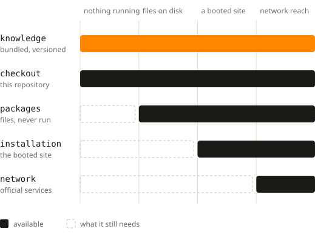

03 · How to build a slide
Five sources
Each source needs a part of the machine before it answers.
- Bundled knowledge and the checkout need nothing.
- Packages need files on disk.
- The installation needs a booted site.

06
Each source needs a part of the machine before it answers.

06